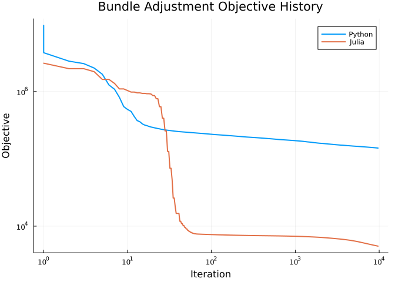

Bundle adjustment
Mateusz Baran 2026-08-21
Preface
This notebook reproduces the results of Section 6.3 in [BB26]. We use the following packages and parameters. If you wish to run this file yourself, you need to download the data from https://grail.cs.washington.edu/projects/bal/ , for example https://grail.cs.washington.edu/projects/bal/data/ladybug/problem-49-7776-pre.txt.bz2 , and update the path data_filename in the cell below.
using Manopt, Manifolds, LinearAlgebra, Test, Chairmarks
using CodecBzip2
using StaticArrays, RecursiveArrayTools
using ManifoldDiff, DifferentiationInterface
using ForwardDiff
using SparseArrays
using DelimitedFiles
using CSV, DataFrames
using Serialization
using ManoptExamples: BlockNonzeroVector, BlockNonzeroMatrix
using NamedColors
export_csv = true
ptc = NamedColors.load_paul_tol()
ltmads_color = ptc["mutedsand"]
robust_color = ptc["mutedgreen"]
data_filename = "/home/$(ENV["USER"])/data/bal/ladybug/problem-49-7776-pre.txt.bz2"Introduction
The bundle adjustment problem is a classical problem in computer vision and photogrammetry [Zac14]. Here we extend the standard formulation with constraints on the camera parameters and point positions [GMS15].
In the following part we define basic structures needed for the reading the data, computing the objective and its Jacobian.
struct BALObservation{T <: Real, I <: Integer}
camera_index::I
point_index::I
xy::SVector{2, T}
end
struct BALCamera{TR <: Real, TT <: Real, TF <: Real, TK1 <: Real, TK2 <: Real}
R::SMatrix{3, 3, TR, 9}
t::SVector{3, TT}
f::TF
k1::TK1
k2::TK2
end
const BALPoint{T} = SVector{3, T}
struct BALDataset{T <: Real, I <: Integer}
num_cameras::Int
num_points::Int
num_observations::Int
observations::Vector{BALObservation{T, I}}
cameras::Vector{BALCamera{T, T, T, T, T}}
points::Vector{BALPoint{T}}
end
function _skew(v::NTuple{3, T}) where {T <: Real}
vx, vy, vz = v
return @SMatrix T[
zero(T) -vz vy
vz zero(T) -vx
-vy vx zero(T)
]
end
"""
rodrigues_to_rotation_matrix(r)
Convert a Rodrigues vector `r = (r1, r2, r3)` to a 3×3 rotation matrix.
"""
function rodrigues_to_rotation_matrix(r::NTuple{3, T}) where {T <: Real}
θ2 = r[1]^2 + r[2]^2 + r[3]^2
θ = sqrt(θ2)
A, B = if θ < sqrt(eps(T))
(
one(T) - θ2 / 6 + θ2^2 / 120,
inv(T(2)) - θ2 / 24 + θ2^2 / 720,
)
else
(sin(θ) / θ, (one(T) - cos(θ)) / θ2)
end
K = _skew(r)
I3 = one(SMatrix{3, 3, T, 9})
return I3 + A * K + B * (K * K)
end
"""
project_point(camera, point)
Project a world-space `BALPoint` into image coordinates using the BAL camera model.
The model uses Rodrigues rotation `R`, translation `t`, focal length `f`, and radial distortion `(k1, k2)`.
Returns `SVector{2, T}`.
"""
function project_point(camera::BALCamera, point::BALPoint)
R = camera.R
xc, yc, zc = R * point + camera.t
abs(zc) > eps() || throw(DomainError(zc, "Point projects to infinity (z≈0 in camera frame)."))
xn = -xc / zc
yn = -yc / zc
r2 = xn^2 + yn^2
radial = 1 + camera.k1 * r2 + camera.k2 * r2^2
return SVector{2}(camera.f * radial * xn, camera.f * radial * yn)
end
"""
reprojection_error(camera, point, observation)
Compute the reprojection residual as `SVector{2, T}`:
`project_point(camera, point) - observation.xy`.
"""
function reprojection_error(camera::BALCamera{T}, point::BALPoint{T}, obs_xy::AbstractVector) where {T <: Real}
return project_point(camera, point) - obs_xy
end
function _next_nonempty_line!(state::Base.Iterators.Stateful)
while !isempty(state)
line = strip(popfirst!(state))
if !isempty(line)
return line
end
end
throw(EOFError())
end
"""
read_bal_bz2(path; one_based_indices=true, T=Float64, I=Int)
Read a bzip2-compressed BAL dataset from the given `path`.
Each camera is parsed as 9 parameters `(r, t, f, k1, k2)` from BAL, where `r` is a Rodrigues vector,
and stored as a 3×3 rotation matrix in `BALCamera.R`.
Each point is parsed as 3D coordinates `(x, y, z)`.
Returns a `BALDataset`.
"""
function read_bal_bz2(path::AbstractString; one_based_indices::Bool = true, T::Type = Float64, I::Type = Int)
return open(path, "r") do raw_io
io = Bzip2DecompressorStream(raw_io)
try
lines = Base.Iterators.Stateful(eachline(io))
header = split(_next_nonempty_line!(lines))
length(header) == 3 || throw(ArgumentError("Header must contain exactly 3 fields"))
num_cameras = parse(Int, header[1])
num_points = parse(Int, header[2])
num_observations = parse(Int, header[3])
observations = Vector{BALObservation{T, I}}(undef, num_observations)
idx_shift = one_based_indices ? 1 : 0
for k in 1:num_observations
fields = split(_next_nonempty_line!(lines))
length(fields) == 4 || throw(ArgumentError("Observation line $k must have 4 fields"))
cam_idx = parse(I, fields[1]) + idx_shift
pt_idx = parse(I, fields[2]) + idx_shift
x = parse(T, fields[3])
y = parse(T, fields[4])
observations[k] = BALObservation{T, I}(cam_idx, pt_idx, SVector{2, T}(x, y))
end
remaining_tokens = String[]
while !isempty(lines)
line = strip(popfirst!(lines))
isempty(line) && continue
append!(remaining_tokens, split(line))
end
expected_values = 9 * num_cameras + 3 * num_points
length(remaining_tokens) == expected_values || throw(
ArgumentError(
"Expected $expected_values camera/point values, got $(length(remaining_tokens))",
),
)
values = parse.(T, remaining_tokens)
cursor = 1
cameras = Vector{BALCamera{T, T, T, T, T}}(undef, num_cameras)
for k in 1:num_cameras
r = (values[cursor], values[cursor + 1], values[cursor + 2])
t = SVector{3, T}(values[cursor + 3], values[cursor + 4], values[cursor + 5])
f = values[cursor + 6]
k1 = values[cursor + 7]
k2 = values[cursor + 8]
R = rodrigues_to_rotation_matrix(r)
cameras[k] = BALCamera{T, T, T, T, T}(R, t, f, k1, k2)
cursor += 9
end
points = Vector{BALPoint{T}}(undef, num_points)
for k in 1:num_points
points[k] = BALPoint{T}(values[cursor], values[cursor + 1], values[cursor + 2])
cursor += 3
end
return BALDataset{T, I}(
num_cameras,
num_points,
num_observations,
observations,
cameras,
points,
)
catch e
rethrow(e)
finally
close(io)
end
end
end
struct Fi_block{TD <: BALDataset}
dataset::TD
obs_idx::Int
end
function (f::Fi_block)(M::AbstractManifold, r, p)
p_cam, p_t, p_intr, p_pt = p.x
obs = f.dataset.observations[f.obs_idx]
cam = BALCamera(
SMatrix{3, 3}(view(p_cam, :, :, obs.camera_index)),
SVector{3}(view(p_t, :, obs.camera_index)),
p_intr[1, obs.camera_index],
p_intr[2, obs.camera_index],
p_intr[3, obs.camera_index],
)
pt_idx = f.dataset.observations[f.obs_idx].point_index
return r .= reprojection_error(cam, SVector{3}(view(p_pt, :, pt_idx)), obs.xy)
end
struct jacFi_block_ad{TD <: BALDataset}
dataset::TD
obs_idx::Int
end
function (f::jacFi_block_ad)(
M::AbstractManifold, J, p;
basis_arg::AbstractBasis = DefaultOrthonormalBasis(),
)
fi = Fi_block(f.dataset, f.obs_idx)
Rot3 = Rotations(3)
M_cam, M_t, M_intr, M_pt = M.manifolds
p_cam, p_t, p_intr, p_pt = p.x
obs = f.dataset.observations[f.obs_idx]
pt_idx = f.dataset.observations[f.obs_idx].point_index
ManifoldDiff._jacobian!(J, zeros(manifold_dimension(M)), AutoForwardDiff()) do cY
Y = get_vector(M, p, cY, basis_arg)
Y_cam, Y_t, Y_intr, Y_pt = Y.x
Y_t_proj = project(M_t, p_t, Y_t)
Y_intr_proj = project(M_intr, p_intr, Y_intr)
Y_pt_proj = project(M_pt, p_pt, Y_pt)
cam = BALCamera(
SMatrix{3, 3}(exp(Rot3, SMatrix{3, 3}(p_cam[M_cam, obs.camera_index]), Y_cam[M_cam, obs.camera_index])),
SVector{3}(p_t[M_t, obs.camera_index] + Y_t_proj[M_t, obs.camera_index]),
p_intr[M_intr, obs.camera_index][1] + Y_intr_proj[M_intr, obs.camera_index][1],
p_intr[M_intr, obs.camera_index][2] + Y_intr_proj[M_intr, obs.camera_index][2],
p_intr[M_intr, obs.camera_index][3] + Y_intr_proj[M_intr, obs.camera_index][3],
)
return reprojection_error(cam, SVector{3}(p_pt[M_pt, pt_idx]) + Y_pt_proj[M_pt, pt_idx], obs.xy)
end
return J
end
struct jacFi_block_analytical{TD <: BALDataset}
dataset::TD
obs_idx::Int
end
function (f::jacFi_block_analytical)(
M::AbstractManifold, J::BlockNonzeroMatrix, p;
basis_arg::DefaultOrthonormalBasis = DefaultOrthonormalBasis(),
)
M_cam, M_t, M_intr, M_pt = M.manifolds
p_cam, p_t, p_intr, p_pt = p.x
obs = f.dataset.observations[f.obs_idx]
cam_idx = obs.camera_index
pt_idx = obs.point_index
R = SMatrix{3, 3}(view(p_cam, :, :, cam_idx))
t = SVector{3}(view(p_t, :, cam_idx))
Xw = SVector{3}(view(p_pt, :, pt_idx))
cam = BALCamera(
R,
t,
p_intr[1, cam_idx],
p_intr[2, cam_idx],
p_intr[3, cam_idx],
)
xc = R * Xw + t
x, y, z = xc
abs(z) > eps(eltype(xc)) || throw(DomainError(z, "Point projects to infinity (z≈0 in camera frame)."))
xn = -x / z
yn = -y / z
r2 = xn^2 + yn^2
radial = 1 + cam.k1 * r2 + cam.k2 * r2^2
radial_prime = cam.k1 + 2 * cam.k2 * r2
du_dxn = cam.f * (radial + 2 * xn^2 * radial_prime)
du_dyn = cam.f * (2 * xn * yn * radial_prime)
dv_dxn = du_dyn
dv_dyn = cam.f * (radial + 2 * yn^2 * radial_prime)
J_uv_xy = @SMatrix [du_dxn du_dyn; dv_dxn dv_dyn]
J_xy_cam = @SMatrix [
-inv(z) 0 x / z^2
0 -inv(z) y / z^2
]
J_proj_cam = J_uv_xy * J_xy_cam
rot_lie_jac = (-inv(sqrt(eltype(xc)(2)))) * _skew((Xw[1], Xw[2], Xw[3]))
J_rot = J_proj_cam * (R * rot_lie_jac)
J_t = J_proj_cam
project_jacobian_to_tangent!(J_t, M_t, p_t, cam_idx)
J_intr = @MArray [
radial * xn cam.f * r2 * xn cam.f * r2^2 * xn
radial * yn cam.f * r2 * yn cam.f * r2^2 * yn
]
project_jacobian_to_tangent!(J_intr, M_intr, p_intr, cam_idx)
J_p = J_proj_cam * R
d_cam = manifold_dimension(M_cam)
d_t = manifold_dimension(M_t)
d_intr = manifold_dimension(M_intr)
col_cam = (cam_idx - 1) * 3 + 1
col_t = d_cam + (cam_idx - 1) * 3 + 1
col_intr = d_cam + d_t + (cam_idx - 1) * 3 + 1
col_p = d_cam + d_t + d_intr + (pt_idx - 1) * 3 + 1
row_starts = (1, 1, 1, 1)
col_starts = (col_cam, col_t, col_intr, col_p)
if J.row_starts != row_starts || J.col_starts != col_starts
error(
"jacFi_block_analytical received BlockNonzeroMatrix with incompatible block layout. " *
"Expected row_starts=$(row_starts), col_starts=$(col_starts), got row_starts=$(J.row_starts), col_starts=$(J.col_starts).",
)
end
J.blocks[1] .= J_rot
J.blocks[2] .= J_t
J.blocks[3] .= J_intr
J.blocks[4] .= J_p
return J
end
function Manopt.allocate_jacobian(
M::AbstractManifold,
vgf::VectorGradientFunction{FunctionVectorialType{NestedPowerRepresentation}, <:CoefficientVectorialType, <:Fi_block, <:jacFi_block_analytical},
::AbstractBasis = DefaultOrthonormalBasis();
T::Type = Float64,
)
fJ = vgf.jacobian!
obs = fJ.dataset.observations[fJ.obs_idx]
M_cam, M_t, M_intr, _ = M.manifolds
d_cam = manifold_dimension(M_cam)
d_t = manifold_dimension(M_t)
d_intr = manifold_dimension(M_intr)
col_cam = (obs.camera_index - 1) * 3 + 1
col_t = d_cam + (obs.camera_index - 1) * 3 + 1
col_intr = d_cam + d_t + (obs.camera_index - 1) * 3 + 1
col_p = d_cam + d_t + d_intr + (obs.point_index - 1) * 3 + 1
blocks = (
zeros(T, vgf.range_dimension, 3),
zeros(T, vgf.range_dimension, 3),
zeros(T, vgf.range_dimension, 3),
zeros(T, vgf.range_dimension, 3),
)
return BlockNonzeroMatrix(
vgf.range_dimension,
manifold_dimension(M),
(1, 1, 1, 1),
(col_cam, col_t, col_intr, col_p),
blocks,
)
endNext, we add a utility to subsample the data to make the example run in a shorter time.
"""
subsample_bal_dataset(dataset, num_cameras, num_points)
Create a reduced `BALDataset` containing only the first `num_cameras` cameras and
the first `num_points` points.
Observations are filtered to those that reference both selected cameras and points,
and their indices are remapped to the new compact index ranges.
"""
function subsample_bal_dataset(dataset::BALDataset{T, I}, num_cameras::Integer, num_points::Integer) where {T <: Real, I <: Integer}
1 <= num_cameras <= dataset.num_cameras || throw(
ArgumentError("num_cameras must be in 1:$(dataset.num_cameras), got $num_cameras"),
)
1 <= num_points <= dataset.num_points || throw(
ArgumentError("num_points must be in 1:$(dataset.num_points), got $num_points"),
)
return subsample_bal_dataset(dataset, collect(1:num_cameras), collect(1:num_points))
end
"""
subsample_bal_dataset(dataset, camera_indices, point_indices)
Create a reduced `BALDataset` from explicitly selected camera and point indices.
Observations are kept only when both their camera and point are selected; indices
in the returned observations are remapped to `1:length(camera_indices)` and
`1:length(point_indices)`.
"""
function subsample_bal_dataset(
dataset::BALDataset{T, I},
camera_indices::AbstractVector{<:Integer},
point_indices::AbstractVector{<:Integer},
) where {T <: Real, I <: Integer}
isempty(camera_indices) && throw(ArgumentError("camera_indices cannot be empty"))
isempty(point_indices) && throw(ArgumentError("point_indices cannot be empty"))
allunique(camera_indices) || throw(ArgumentError("camera_indices must be unique"))
allunique(point_indices) || throw(ArgumentError("point_indices must be unique"))
all(1 <= i <= dataset.num_cameras for i in camera_indices) || throw(
ArgumentError("camera_indices must be in 1:$(dataset.num_cameras)"),
)
all(1 <= i <= dataset.num_points for i in point_indices) || throw(
ArgumentError("point_indices must be in 1:$(dataset.num_points)"),
)
camera_map = Dict{I, I}(I(old_idx) => I(new_idx) for (new_idx, old_idx) in enumerate(camera_indices))
point_map = Dict{I, I}(I(old_idx) => I(new_idx) for (new_idx, old_idx) in enumerate(point_indices))
observations = BALObservation{T, I}[]
for obs in dataset.observations
haskey(camera_map, obs.camera_index) || continue
haskey(point_map, obs.point_index) || continue
push!(
observations,
BALObservation{T, I}(
camera_map[obs.camera_index],
point_map[obs.point_index],
obs.xy,
),
)
end
cameras = dataset.cameras[Int.(camera_indices)]
points = dataset.points[Int.(point_indices)]
return BALDataset{T, I}(
length(cameras),
length(points),
length(observations),
observations,
cameras,
points,
)
end
function subsample_bal(dataset::BALDataset, num_cameras::Int)
cam_indices = 1:num_cameras
pt_indices = points_observed_by_cameras(dataset, cam_indices)
return subsample_bal_dataset(dataset, cam_indices, pt_indices)
end
"""
points_observed_by_cameras(dataset, camera_indices)
Return unique point indices observed by any camera listed in `camera_indices`.
The returned indices follow first-appearance order in `dataset.observations`.
"""
function points_observed_by_cameras(
dataset::BALDataset{T, I},
camera_indices::AbstractVector{<:Integer},
) where {T <: Real, I <: Integer}
isempty(camera_indices) && throw(ArgumentError("camera_indices cannot be empty"))
all(1 <= i <= dataset.num_cameras for i in camera_indices) || throw(
ArgumentError("camera_indices must be in 1:$(dataset.num_cameras)"),
)
selected_cameras = Set{I}(I.(camera_indices))
seen_points = Set{I}()
points = I[]
for obs in dataset.observations
obs.camera_index in selected_cameras || continue
obs.point_index in seen_points && continue
push!(points, obs.point_index)
push!(seen_points, obs.point_index)
end
return points
endMain.Notebook.points_observed_by_camerasNow we read the data into data1.
data1 = read_bal_bz2(data_filename)BALDataset{Float64, Int64}(49, 7776, 31843, BALObservation{Float64, Int64}[BALObservation{Float64, Int64}(1, 1, [-332.65, 262.09]), BALObservation{Float64, Int64}(2, 1, [-199.76, 166.7]), BALObservation{Float64, Int64}(4, 1, [-253.06, 202.27]), BALObservation{Float64, Int64}(27, 1, [58.13, 271.89]), BALObservation{Float64, Int64}(30, 1, [238.22, 237.37]), BALObservation{Float64, Int64}(37, 1, [317.55, 221.15]), BALObservation{Float64, Int64}(1, 2, [122.41, 65.54999]), BALObservation{Float64, Int64}(2, 2, [123.39, 60.03003]), BALObservation{Float64, Int64}(5, 2, [122.68, 70.53998]), BALObservation{Float64, Int64}(9, 2, [126.96, 77.32001]) … BALObservation{Float64, Int64}(48, 7772, [-341.99, 22.15997]), BALObservation{Float64, Int64}(49, 7772, [136.54, 19.21997]), BALObservation{Float64, Int64}(48, 7773, [-178.12, -14.04999]), BALObservation{Float64, Int64}(49, 7773, [369.95, -19.21997]), BALObservation{Float64, Int64}(48, 7774, [-174.18, -14.04999]), BALObservation{Float64, Int64}(49, 7774, [376.82, -19.23999]), BALObservation{Float64, Int64}(48, 7775, [-379.07, 43.83002]), BALObservation{Float64, Int64}(49, 7775, [111.22, 36.46997]), BALObservation{Float64, Int64}(48, 7776, [-281.64, 24.15002]), BALObservation{Float64, Int64}(49, 7776, [202.2, 26.34998])], BALCamera{Float64, Float64, Float64, Float64, Float64}[BALCamera{Float64, Float64, Float64, Float64, Float64}([0.9999085155206503 0.0042998631065060255 -0.012824654636859513; -0.004501204604228039 0.9998664233935709 -0.01571224131877058; 0.012755381076247395 0.015768530287053183 0.9997943056980201], [-0.034093839577186584, -0.10751387104921525, 1.1202240291236032], 399.75152639358436, -3.177064385280358e-7, 5.882049053459402e-13), BALCamera{Float64, Float64, Float64, Float64, Float64}([0.9996377114474195 0.009197113237257602 -0.025295433585269315; -0.009600099774460264 0.9998281952556147 -0.015856167765915172; 0.02514525673931602 0.016093261944102582 0.999554262150641], [-0.00856676614082241, -0.12188049069425422, 0.719013307500946], 402.0175338595593, -3.7804765613385677e-7, 9.30743116838448e-13), BALCamera{Float64, Float64, Float64, Float64, Float64}([0.9999754999727286 0.006389499473040255 -0.0028589772253993753; -0.006429825340425637 0.9998767120679152 -0.01432543229180176; 0.002767092405929797 0.014343464042531518 0.999893298426826], [-0.03651773525727264, -0.09832188864647372, 1.3142176366009473], 399.4520281820726, -3.171178992950316e-7, 5.498091330008535e-13), BALCamera{Float64, Float64, Float64, Float64, Float64}([0.999777508588392 0.0010104747182345774 -0.021069225463496877; -0.0013231624736898021 0.9998891196778825 -0.014832315761790007; 0.021051901620900558 0.014856893707401756 0.9996679899584217], [-0.024950970734443037, -0.11398470545726247, 0.9216602073702798], 400.4017536835857, -3.2952646187978145e-7, 6.732885068879348e-13), BALCamera{Float64, Float64, Float64, Float64, Float64}([0.9999789042487924 0.006343211943625609 0.0013981128790757588; -0.006322447749609898 0.9998765165333205 -0.014386741800905226; -0.001489198387671982 0.014377598806153497 0.9998955280131677], [-0.046798213049368695, -0.09059542591254682, 1.5018614537656685], 399.33701786990997, -3.205886868605129e-7, 5.377378107928205e-13), BALCamera{Float64, Float64, Float64, Float64, Float64}([0.9997613215733768 0.006243978616681869 -0.020935916910643608; -0.006506172254545076 0.9999009673529925 -0.012478990710151355; 0.02085592502022246 0.012612224926010303 0.9997029369637596], [0.011685775354751097, -0.1268362165583245, 0.5141636650047947], 402.5349918213326, -3.8581094810939964e-7, 1.0498504345556275e-12), BALCamera{Float64, Float64, Float64, Float64, Float64}([0.9999707344918974 0.0061676072517142504 0.00452667433374563; -0.006105494322352693 0.9998887470256678 -0.01360942726641591; -0.004610108330062179 0.013581391395168153 0.9998971410644979], [-0.056648223764757935, -0.08314469628790983, 1.6829877059527225], 398.9493428921846, -3.0134311309248137e-7, 4.333007278222162e-13), BALCamera{Float64, Float64, Float64, Float64, Float64}([0.9997691356500352 0.01164512814780767 -0.018057308548136503; -0.01191895081839368 0.9998144731877125 -0.015131352079889004; 0.0178777518992232 0.015343082962624757 0.9997224493789424], [0.02957335797624281, -0.13665800476565831, 0.30559022996871843], 402.79146963221916, -3.7985271771959495e-7, 1.0566028783032002e-12), BALCamera{Float64, Float64, Float64, Float64, Float64}([0.9999646813296532 0.004718840204993331 0.006954756674731771; -0.004606889199530235 0.9998609607149851 -0.0160260977786286; -0.007029414284863234 0.015993491964754015 0.9998473861292957], [-0.06743790040867771, -0.0807931207807083, 1.8593089747465263], 398.32357102508524, -2.6680574966849537e-7, 2.9493189811408063e-13), BALCamera{Float64, Float64, Float64, Float64, Float64}([0.9999504983995925 0.0023549895481513026 0.009667200972084233; -0.002186833346360733 0.9998467668797288 -0.01736837701307705; -0.009706621983049148 0.017346376693166694 0.9998024228342802], [-0.07655597738372918, -0.07680032847432483, 2.0324911381645463], 397.6575335886219, -2.481177967965727e-7, 2.2220682777523466e-13) … BALCamera{Float64, Float64, Float64, Float64, Float64}([0.9996883098883564 0.016311347315577967 0.018900344476016233; -0.015949726732779727 0.9996898082087852 -0.019128344952764987; -0.019206490822405366 0.018820927507243245 0.9996383763131825], [0.16963050457696044, -0.20571525157988435, -1.5776228908300032], 410.6184099876556, -7.571348696032157e-7, 2.5317961163062445e-12), BALCamera{Float64, Float64, Float64, Float64, Float64}([0.3485833733988305 -0.02329111640945298 -0.936988343410041; 0.011153241179537816 0.9997234932393594 -0.020701262678484027; 0.9372114153173139 -0.003234340998386518 0.34874675917809417], [-3.357267191870961, -0.04230071388960088, 0.979191486222444], 402.67502354700304, 3.0088076574753757e-9, -2.4691143617701325e-14), BALCamera{Float64, Float64, Float64, Float64, Float64}([0.3519079350394795 -0.022650687317170508 -0.9357605204432966; 0.010773337968250835 0.999738965832248 -0.02014783823860898; 0.9359726173586871 -0.0029910801940235803 0.35206009855421216], [-3.2173747441191276, -0.04507585676851315, 0.9551197136042927], 402.98882320791324, 1.1311189115092265e-8, -1.5915152114053587e-14), BALCamera{Float64, Float64, Float64, Float64, Float64}([0.30947055213226116 -0.021569831697949543 -0.9506643570280078; -0.005415514478792587 0.9996865073905411 -0.024445022892840517; 0.9508936058076547 0.012713351321490342 0.3092567236654572], [-0.6740673443231142, -0.1415664425333927, 0.23340244000915744], 401.58414074796923, 2.587071199087985e-8, -1.1673321103519848e-13), BALCamera{Float64, Float64, Float64, Float64, Float64}([0.9994160974120628 0.01649055571191449 0.02992533719032074; -0.016045664079000405 0.9997580409253667 -0.015046470328174305; -0.030166221140640492 0.014557512747203695 0.9994388815353888], [0.1356069299033995, -0.20212487340233046, -1.376286356738806], 408.5893957647017, -7.343666047559653e-7, 2.4551235752209984e-12), BALCamera{Float64, Float64, Float64, Float64, Float64}([0.35324218084541237 -0.024144496571251138 -0.9352202975539495; 0.008273771718183531 0.9997084412580974 -0.02268429366016289; 0.935495326751092 0.00027525011528064733 0.35333895605245913], [-3.075133079305801, -0.05634294612903103, 0.9247710543817742], 402.78411073240625, 2.6441292980137116e-8, -1.4793136416996808e-15), BALCamera{Float64, Float64, Float64, Float64, Float64}([0.9998213206405252 0.018411530330084986 0.004282796229159361; -0.01833075999224101 0.9996664927562086 -0.01819028583085111; -0.0046162788848809104 0.01810852869245779 0.999825370331165], [0.21147063560367463, -0.2179809959595539, -1.7774054908747985], 410.5114122169437, -7.371114286052213e-7, 2.2287232906504176e-12), BALCamera{Float64, Float64, Float64, Float64, Float64}([0.34064126610747547 -0.023663740109886915 -0.9398955022919877; 0.015417929017254674 0.999689381188727 -0.01958133303222615; 0.9400669206442247 -0.007821032061805141 0.3409003023876237], [-3.4938757915053715, -0.03586534034665019, 0.9816070502505051], 402.3011128976494, 2.0078395070800688e-8, -3.2677448779573e-14), BALCamera{Float64, Float64, Float64, Float64, Float64}([0.9996688562848695 0.0007070208277941966 0.025723100428410393; -0.00036206236333435513 0.9999099809331953 -0.013412641090487665; -0.025730267875521202 0.013398886212153852 0.9995791230129447], [-0.14607226568006815, -0.012937801074314303, 3.362967948340021], 395.27331372149314, -2.8858056159710553e-7, 5.732766079605257e-13), BALCamera{Float64, Float64, Float64, Float64, Float64}([0.3277982893860393 -0.023233254687290872 -0.9444620147746661; 0.017515637092868512 0.9996751968654316 -0.018512245387618573; 0.9445853502637107 -0.010474571528036512 0.3280987647317293], [-3.6369157442842077, -0.028163736756758692, 0.9620538672467951], 403.85565612062595, 1.4565222901531937e-8, 3.7759294886475856e-14)], SVector{3, Float64}[[-0.6120001571722636, 0.5717590477602829, -1.8470812764548823], [1.7074972220818254, 0.9538692172378666, -6.877168577973562], [-0.37336956576509006, 1.5358796912679662, -4.782423049290384], [1.7173365638756202, 0.761972557168679, -6.8460103741461875], [1.6101822394968637, 1.2975947942209867, -6.832572584051145], [-0.40654401040611504, 1.354488072141559, -7.071321513839115], [2.2366726805183, 0.3247308160846927, -6.208873114614725], [1.403796377102331, 1.2396759465448868, -6.82222163053328], [1.3085921709869803, 0.020492306890920065, -2.980027045788169], [1.5804620556806404, 1.2377938510933983, -5.029377465247182] … [-0.8910821045741955, -0.16788418725354712, -4.494566797320796], [-0.9121985582330264, -0.3113290519586495, -4.050025888643179], [-0.049048788500147225, -0.31669058826253804, -4.094578043316447], [-0.5463489535240862, 1.095941320300914, -4.81463486258627], [-0.7560316713834854, 0.022704851304015252, -4.48644247237069], [-0.7516117532851013, 0.016747670016466855, -4.557131714237137], [-0.6860792737866311, -0.1355139880597621, -5.543829743554321], [-0.6642267335241681, -0.13508206155480518, -5.5425241123027185], [-0.8193482549379905, 0.07654736683564434, -4.514336957501453], [-0.7480001740845955, 0.03709491415824542, -4.81316929867681]])We use a custom solver that can exploit Jacobian sparsity of the problem. We will provide it to CoordinatesNormalSystemState constructor later.
"""
CachedLMSparseSolver()
Cache for repeated sparse LM linear solves with a fixed sparsity pattern.
Reuses symbolic factorization and updates only numeric values via `cholesky!`.
"""
mutable struct CachedLMSparseSolver
factorization::Any
rowval_objid::UInt
colptr_objid::UInt
rowval_len::Int
colptr_len::Int
CachedLMSparseSolver() = new(nothing, 0, 0, -1, -1)
end
function _solve_lm_cached!(sk, JJ::SparseMatrixCSC, grad_f_c, solver::CachedLMSparseSolver)
pattern_changed =
solver.rowval_objid != objectid(JJ.rowval) ||
solver.colptr_objid != objectid(JJ.colptr) ||
solver.rowval_len != length(JJ.rowval) ||
solver.colptr_len != length(JJ.colptr)
if pattern_changed
solver.factorization = nothing
solver.rowval_objid = objectid(JJ.rowval)
solver.colptr_objid = objectid(JJ.colptr)
solver.rowval_len = length(JJ.rowval)
solver.colptr_len = length(JJ.colptr)
end
try
if isnothing(solver.factorization)
solver.factorization = cholesky(Symmetric(JJ))
else
cholesky!(solver.factorization, Symmetric(JJ))
end
ldiv!(sk, solver.factorization, grad_f_c)
catch e
if e isa PosDefException
sk .= Symmetric(JJ) \ grad_f_c
elseif e isa ArgumentError || e isa DimensionMismatch
# Structure or dimensions changed; rebuild the cached factorization.
solver.factorization = cholesky(Symmetric(JJ))
ldiv!(sk, solver.factorization, grad_f_c)
else
rethrow()
end
end
return sk
end
function (solver::CachedLMSparseSolver)(sk, JJ::SparseMatrixCSC, grad_f_c)
return _solve_lm_cached!(sk, JJ, grad_f_c, solver)
end
function (solver::CachedLMSparseSolver)(sk, JJ::AbstractMatrix, grad_f_c)
# Dense fallback keeps behavior aligned with Manopt default.
return Manopt.default_lm_lin_solve!(sk, JJ, grad_f_c)
endNow we can construct the problem and solve it using Manopt.jl. Notice how M = ProductManifold in construct_bal_problem sets up the domain of the problem: camera rotations, camera positions, bounded intrinsic camera parameters and finally bounded point positions. Bounds can be easily changed by modifying the parameters of Hyperrectangle.
function project_jacobian_to_tangent!(J, M::AbstractManifold, p, idx::Integer)
return J
end
function project_jacobian_to_tangent!(J, M::Hyperrectangle, p, idx::Integer)
lb = M.lb
ub = M.ub
p_idx = view(p, :, idx)
atol = sqrt(eps(eltype(p)))
zero_j = zero(eltype(J))
for j in axes(J, 2)
pj = p_idx[j]
lbj = lb[j, idx]
ubj = ub[j, idx]
if pj <= lbj + atol
@views J[:, j] .= max.(J[:, j], zero_j)
end
if pj >= ubj - atol
@views J[:, j] .= min.(J[:, j], zero_j)
end
end
return J
end
function construct_bal_problem(data::BALDataset)
M_point_pos = Hyperrectangle(fill(-1.0, 3, data.num_points), fill(1.0, 3, data.num_points))
intrinsics_bounds_low = reduce(hcat, [SVector(350, 0.0, 0.0) for cam in data.cameras])
intrinsics_bounds_upp = reduce(hcat, [SVector(450, 0.1, 0.1) for cam in data.cameras])
M = ProductManifold(
PowerManifold(Rotations(3), ArrayPowerRepresentation(), data.num_cameras),
Euclidean(3, data.num_cameras),
Hyperrectangle(intrinsics_bounds_low, intrinsics_bounds_upp),
M_point_pos,
)
F = [Fi_block(data, i) for i in 1:data.num_observations]
JF = [jacFi_block_analytical(data, i) for i in 1:data.num_observations]
f = [
VectorGradientFunction(
F[i], JF[i], 2;
evaluation = InplaceEvaluation(),
function_type = FunctionVectorialType(),
jacobian_type = CoefficientVectorialType(DefaultOrthonormalBasis()),
) for i in 1:data.num_observations
]
return M, f, F
end
function point_from_bal_state(
cameras::AbstractVector{<:BALCamera},
points::AbstractVector{<:BALPoint},
)
n_cameras = length(cameras)
n_points = length(points)
p_cam = stack([Matrix{Float64}(cam.R) for cam in cameras])
p_t = reduce(hcat, [SVector{3, Float64}(cam.t...) for cam in cameras])
p_intr = stack([SVector{3, Float64}(cam.f, cam.k1, cam.k2) for cam in cameras])
p_pt = reduce(hcat, [SVector{3, Float64}(pt...) for pt in points])
size(p_cam, 3) == n_cameras || throw(ArgumentError("Invalid camera rotation layout."))
size(p_t, 2) == n_cameras || throw(ArgumentError("Invalid camera translation layout."))
size(p_intr, 2) == n_cameras || throw(ArgumentError("Invalid camera intrinsics layout."))
size(p_pt, 2) == n_points || throw(ArgumentError("Invalid point layout."))
return ArrayPartition(p_cam, p_t, p_intr, p_pt)
end
function _count_active_bounds(M::ProductManifold, q; atol::Real = 1.0e-10)
active = 0
for (Mi, qi) in zip(M.manifolds, q.x)
Mi isa Hyperrectangle || continue
lb = Mi.lb
ub = Mi.ub
for idx in eachindex(qi, lb, ub)
x = qi[idx]
l = lb[idx]
u = ub[idx]
if (x <= l + atol) || (x >= u - atol)
active += 1
end
end
end
return active
end
function save_julia_solution_and_active_bounds(
q,
M::ProductManifold;
output_dir::AbstractString = joinpath(@__DIR__, "bal_csv_solution"),
atol::Real = 1.0e-10,
)
mkpath(output_dir)
p_cam, p_t, p_intr, p_pt = q.x
q_serialized = joinpath(output_dir, "julia_solution_q.jls")
open(q_serialized, "w") do io
Serialization.serialize(io, q)
end
n_cameras = size(p_cam, 3)
camera_rot_flat = Matrix{Float64}(undef, n_cameras, 9)
for i in 1:n_cameras
camera_rot_flat[i, :] .= vec(p_cam[:, :, i])
end
camera_rot_csv = joinpath(output_dir, "julia_solution_camera_rotations.csv")
camera_t_csv = joinpath(output_dir, "julia_solution_camera_translations.csv")
camera_intr_csv = joinpath(output_dir, "julia_solution_camera_intrinsics.csv")
points_csv = joinpath(output_dir, "julia_solution_points_3d.csv")
writedlm(camera_rot_csv, camera_rot_flat, ',')
writedlm(camera_t_csv, Matrix(p_t), ',')
writedlm(camera_intr_csv, Matrix(p_intr), ',')
writedlm(points_csv, Matrix(p_pt), ',')
active_bounds_count = _count_active_bounds(M, q; atol = atol)
active_bounds_csv = joinpath(output_dir, "julia_solution_active_bounds.csv")
open(active_bounds_csv, "w") do io
println(io, "metric,value")
println(io, "active_bounds_count,$(active_bounds_count)")
end
@info "Saved Julia solution and active-bounds summary" q_serialized = q_serialized active_bounds_count = active_bounds_count active_bounds_csv = active_bounds_csv
return (
q_serialized = q_serialized,
camera_rot_csv = camera_rot_csv,
camera_t_csv = camera_t_csv,
camera_intr_csv = camera_intr_csv,
points_csv = points_csv,
active_bounds_csv = active_bounds_csv,
active_bounds_count = active_bounds_count,
)
end
function run_bundle_adjustment(data::BALDataset)
M, f, F = construct_bal_problem(data)
p0 = ArrayPartition(
stack([Matrix{Float64}(I, 3, 3) for _ in 1:data.num_cameras]), # camera rotations
ones(3, data.num_cameras), # camera translations
stack([SVector(400.0, 0.0, 0.0) for cam in data.cameras]), # camera intrinsics [f, k1, k2]
zeros(3, data.num_points), # 3D point positions
)
hr = fill(HuberRobustifier(), length(F))
n = manifold_dimension(M)
A = spzeros(n, n)
sparse_lm_solver = CachedLMSparseSolver()
t1 = time()
lm_state = LevenbergMarquardt(
M, f, p0;
initial_jacobian_matrices = [Manopt.allocate_jacobian(M, fi) for fi in f],
initial_damping_term = 0.1,
damping_increase_factor = 8.0, candidate_acceptance_threshold = 0.2, damping_term_min = 1.0e-5, scaling_threshold = 1.0e-1, scaling_mode = :Strict,
damping_reduction_factor = 0.2, damping_reduction_threshold = 0.5,
robustifier = hr,
debug = [:Iteration, (:Cost, "f(x): %8.8e "), :damping_term, "\n", :Stop, 50],
record = [:Iteration, :Cost],
stopping_criterion = StopAfterIteration(10000) | StopWhenGradientNormLess(1.0e-12) | StopWhenStepsizeLess(1.0e-11),
sub_state = CoordinatesNormalSystemState(
M;
A = A,
linsolve = sparse_lm_solver
),
use_unified_basis = true,
return_state = true,
)
t2 = time()
@info "Finished LM optimization" time = t2 - t1
records = get_record(lm_state, :Iteration, (:Iteration, :Cost))
records_csv = joinpath(@__DIR__, "bal_csv_solution", "julia_iteration_cost.csv")
mkpath(dirname(records_csv))
open(records_csv, "w") do io
println(io, "iteration,objective")
for (iter, objective) in records
println(io, "$(iter),$(objective)")
end
end
@info "Saved Julia iteration/cost history CSV" path = records_csv num_rows = length(records)
q = get_state(lm_state).p
save_julia_solution_and_active_bounds(q, M)
return q
end
"""
read_python_solution_csv(camera_csv_path, points_csv_path; T = Float64)
Load the CSV files exported by `LM-BAL-ls.py` and return:
- `camera_params`: matrix with rows `[r1,r2,r3,tx,ty,tz,f,k1,k2]`
- `points_3d`: matrix with rows `[x,y,z]`
- `cameras`: `Vector{BALCamera}` converted from Rodrigues vectors
- `points`: `Vector{BALPoint}`
"""
function read_python_solution_csv(camera_csv_path::AbstractString, points_csv_path::AbstractString; T::Type = Float64)
camera_params_raw = readdlm(camera_csv_path, ',', T)
points_3d_raw = readdlm(points_csv_path, ',', T)
camera_params = ndims(camera_params_raw) == 1 ? reshape(camera_params_raw, 1, :) : Matrix(camera_params_raw)
points_3d = ndims(points_3d_raw) == 1 ? reshape(points_3d_raw, 1, :) : Matrix(points_3d_raw)
size(camera_params, 2) == 9 || throw(ArgumentError("Expected 9 camera parameters per row, got $(size(camera_params, 2))."))
size(points_3d, 2) == 3 || throw(ArgumentError("Expected 3 point coordinates per row, got $(size(points_3d, 2))."))
cameras = Vector{BALCamera{T, T, T, T, T}}(undef, size(camera_params, 1))
for i in axes(camera_params, 1)
r = (camera_params[i, 1], camera_params[i, 2], camera_params[i, 3])
t = SVector{3, T}(camera_params[i, 4], camera_params[i, 5], camera_params[i, 6])
f = camera_params[i, 7]
k1 = camera_params[i, 8]
k2 = camera_params[i, 9]
cameras[i] = BALCamera{T, T, T, T, T}(rodrigues_to_rotation_matrix(r), t, f, k1, k2)
end
points = [BALPoint{T}(points_3d[i, 1], points_3d[i, 2], points_3d[i, 3]) for i in axes(points_3d, 1)]
return camera_params, points_3d, cameras, points
end
data1_sub = subsample_bal(data1, 5)
run_bundle_adjustment(data1_sub)
"""
plot_python_julia_history_and_export_latex_data(; kwargs...)
Read `python_opt_history.csv` and `julia_iteration_cost.csv`, plot objective values,
and export subsampled (every `subsample_step` iterations) CSV files for LaTeX.
Keyword arguments:
- `python_csv`: path to Python history CSV.
- `julia_csv`: path to Julia history CSV.
- `output_dir`: directory where plot and LaTeX-ready CSV files are saved.
- `subsample_step`: iteration stride for subsampling (default: `10`).
Returns a named tuple with output file paths.
"""
function plot_python_julia_history_and_export_latex_data(
;
python_csv::AbstractString = joinpath(@__DIR__, "bal_csv_solution", "python_opt_history.csv"),
julia_csv::AbstractString = joinpath(@__DIR__, "bal_csv_solution", "julia_iteration_cost.csv"),
subsample_step::Integer = 10,
)
subsample_step > 0 || throw(ArgumentError("subsample_step must be > 0"))
isfile(python_csv) || throw(ArgumentError("CSV file not found: $python_csv"))
isfile(julia_csv) || throw(ArgumentError("CSV file not found: $julia_csv"))
py = CSV.read(python_csv, DataFrame)
jl = CSV.read(julia_csv, DataFrame)
"iteration" in names(py) || throw(ArgumentError("Python CSV must contain column: iteration"))
"objective" in names(py) || throw(ArgumentError("Python CSV must contain column: objective"))
"iteration" in names(jl) || throw(ArgumentError("Julia CSV must contain column: iteration"))
"objective" in names(jl) || throw(ArgumentError("Julia CSV must contain column: objective"))
py_iter = Int.(round.(Float64.(py.iteration)))
py_obj = Float64.(py.objective)
jl_iter = Int.(round.(Float64.(jl.iteration)))
jl_obj = Float64.(jl.objective)
isempty(py_iter) && throw(ArgumentError("Python CSV has no data rows"))
max_py_iter = maximum(py_iter)
jl_keep = jl_iter .<= max_py_iter
any(jl_keep) || throw(ArgumentError("No Julia iterations overlap with Python iteration range"))
jl_iter = jl_iter[jl_keep]
jl_obj = jl_obj[jl_keep]
py_mask = map(i -> (i <= 100) || (mod(i, subsample_step) == 0), py_iter)
jl_mask = map(i -> (i <= 100) || (mod(i, subsample_step) == 0), jl_iter)
# Ensure non-empty exports even if iterations do not hit the exact stride.
any(py_mask) || (py_mask = fill(false, length(py_iter)); !isempty(py_mask) && (py_mask[1] = true))
any(jl_mask) || (jl_mask = fill(false, length(jl_iter)); !isempty(jl_mask) && (jl_mask[1] = true))
py_sub_iter = py_iter[py_mask]
py_sub_obj = py_obj[py_mask]
jl_sub_iter = jl_iter[jl_mask]
jl_sub_obj = jl_obj[jl_mask]
# Log-scale x-axes require strictly positive values; map iteration 0 to 1 for plotting only.
py_plot_iter = max.(py_iter, 1)
jl_plot_iter = max.(jl_iter, 1)
plt = try
Base.eval(Main, :(begin
using Plots
p = plot(
$(py_plot_iter),
$(py_obj);
label = "Python",
xlabel = "Iteration",
ylabel = "Objective",
xscale = :log10,
yscale = :log10,
linewidth = 2,
legend = :topright,
title = "Bundle Adjustment Objective History",
)
plot!(p, $(jl_plot_iter), $(jl_obj); label = "Julia", linewidth = 2)
p
end))
catch e
@warn "Could not generate plot. Install Plots.jl to enable plotting." exception = (e, catch_backtrace())
nothing
end
return plt
end
plot_python_julia_history_and_export_latex_data()Initial f(x): 2.63842469e+06 damping_term: 0.1
# 50 f(x): 9.09608475e+03 damping_term: 7.922816251426446
# 100 f(x): 7.49170530e+03 damping_term: 627.7101735386699
# 150 f(x): 7.38651375e+03 damping_term: 1243.3080910244726
# 200 f(x): 7.32231584e+03 damping_term: 2462.625387274671
# 250 f(x): 7.28016571e+03 damping_term: 4877.732109868778
# 300 f(x): 7.25014039e+03 damping_term: 9661.343807543242
# 350 f(x): 7.23071587e+03 damping_term: 19136.262932255468
# 400 f(x): 7.21621338e+03 damping_term: 37903.27373781076
# 450 f(x): 7.20212975e+03 damping_term: 1876.879207201202
# 500 f(x): 7.18991260e+03 damping_term: 3717.542271194516
# 550 f(x): 7.17813357e+03 damping_term: 7363.351080396173
# 600 f(x): 7.16622019e+03 damping_term: 14584.619401180316
# 650 f(x): 7.15368080e+03 damping_term: 28887.814903135204
# 700 f(x): 7.14175911e+03 damping_term: 1430.455308642242
# 750 f(x): 7.13016617e+03 damping_term: 2833.308641562497
# 800 f(x): 7.11818111e+03 damping_term: 5611.945937669585
# 850 f(x): 7.10681470e+03 damping_term: 11115.604119273803
# 900 f(x): 7.09545006e+03 damping_term: 22016.722240151314
# 950 f(x): 7.08367851e+03 damping_term: 43608.611191853226
# 1000 f(x): 7.07180454e+03 damping_term: 2159.39383408095
# 1050 f(x): 7.06003610e+03 damping_term: 4277.120140471653
# 1100 f(x): 7.04851405e+03 damping_term: 8471.709239558046
# 1150 f(x): 7.03598242e+03 damping_term: 16779.948910132516
# 1200 f(x): 7.02331987e+03 damping_term: 33236.11298082585
# 1250 f(x): 7.00965537e+03 damping_term: 1645.7726003670778
# 1300 f(x): 6.99693611e+03 damping_term: 3259.788476085161
# 1350 f(x): 6.98353728e+03 damping_term: 6456.676278635042
# 1400 f(x): 6.96993151e+03 damping_term: 12788.764937642334
# 1450 f(x): 6.95617113e+03 damping_term: 25330.75867090635
# 1500 f(x): 6.94211013e+03 damping_term: 1254.3184153676139
# 1550 f(x): 6.92849619e+03 damping_term: 2484.4335814344986
# 1600 f(x): 6.91651005e+03 damping_term: 4920.927688644711
# 1650 f(x): 6.90333313e+03 damping_term: 9746.901465922172
# 1700 f(x): 6.89015665e+03 damping_term: 19305.7273338151
# 1750 f(x): 6.87650552e+03 damping_term: 955.9733141622378
# 1800 f(x): 6.86301152e+03 damping_term: 1893.5002273436444
# 1850 f(x): 6.84984767e+03 damping_term: 3750.463593319474
# 1900 f(x): 6.83626483e+03 damping_term: 7428.55847688369
# 1950 f(x): 6.82248179e+03 damping_term: 14713.775956331447
# 2000 f(x): 6.80903472e+03 damping_term: 29143.635816667607
# 2050 f(x): 6.79433734e+03 damping_term: 1443.1229467121748
# 2100 f(x): 6.78064642e+03 damping_term: 2858.39948375441
# 2150 f(x): 6.76715046e+03 damping_term: 5661.6434707396
# 2200 f(x): 6.75239852e+03 damping_term: 11214.040224939537
# 2250 f(x): 6.73844364e+03 damping_term: 22211.69503457522
# 2300 f(x): 6.72412072e+03 damping_term: 1099.8698649478786
# 2350 f(x): 6.71010815e+03 damping_term: 2178.5167101158163
# 2400 f(x): 6.69622577e+03 damping_term: 4314.996898727415
# 2450 f(x): 6.68195991e+03 damping_term: 8546.731888523069
# 2500 f(x): 6.66771854e+03 damping_term: 16928.546575743803
# 2550 f(x): 6.65401793e+03 damping_term: 838.2610245208284
# 2600 f(x): 6.64047619e+03 damping_term: 1660.3470170027501
# 2650 f(x): 6.62728426e+03 damping_term: 3288.6560823292007
# 2700 f(x): 6.61386507e+03 damping_term: 6513.854463607557
# 2750 f(x): 6.60013280e+03 damping_term: 12902.01800092416
# 2800 f(x): 6.58677478e+03 damping_term: 25555.07947347961
# 2850 f(x): 6.57313896e+03 damping_term: 1265.4262434936168
# 2900 f(x): 6.55985646e+03 damping_term: 2506.434901733186
# 2950 f(x): 6.54757422e+03 damping_term: 4964.5057931485335
# 3000 f(x): 6.53498248e+03 damping_term: 9833.216794564489
# 3050 f(x): 6.52246699e+03 damping_term: 19476.692455943747
# 3100 f(x): 6.51038427e+03 damping_term: 964.4390969624123
# 3150 f(x): 6.49758429e+03 damping_term: 1910.2684377312123
# 3200 f(x): 6.48509260e+03 damping_term: 3783.676455760965
# 3250 f(x): 6.47310750e+03 damping_term: 7494.343328460647
# 3300 f(x): 6.46095113e+03 damping_term: 14844.076279124345
# 3350 f(x): 6.44908221e+03 damping_term: 29401.722195415045
# 3400 f(x): 6.43697638e+03 damping_term: 1455.902765186
# 3450 f(x): 6.42487088e+03 damping_term: 2883.712522128085
# 3500 f(x): 6.41291246e+03 damping_term: 5711.781108689584
# 3550 f(x): 6.40073154e+03 damping_term: 11313.348048129103
# 3600 f(x): 6.38921581e+03 damping_term: 22408.394443440226
# 3650 f(x): 6.37649463e+03 damping_term: 1109.6099479053898
# 3700 f(x): 6.36399348e+03 damping_term: 2197.8089320023187
# 3750 f(x): 6.35249269e+03 damping_term: 4353.209080999542
# 3800 f(x): 6.34060398e+03 damping_term: 8622.418913200088
# 3850 f(x): 6.32785962e+03 damping_term: 17078.460173027113
# 3900 f(x): 6.31554282e+03 damping_term: 845.6843863012406
# 3950 f(x): 6.30332570e+03 damping_term: 1675.050499841267
# 4000 f(x): 6.29054851e+03 damping_term: 3317.779330525594
# 4050 f(x): 6.27830783e+03 damping_term: 6571.538999633733
# 4100 f(x): 6.26580249e+03 damping_term: 13016.273995795207
# 4150 f(x): 6.25359263e+03 damping_term: 25781.386786726434
# 4200 f(x): 6.24030366e+03 damping_term: 1276.6324388636706
# 4250 f(x): 6.22787285e+03 damping_term: 2528.6310584318167
# 4300 f(x): 6.21558957e+03 damping_term: 5008.469810901312
# 4350 f(x): 6.20296622e+03 damping_term: 9920.296503146912
# 4400 f(x): 6.19041692e+03 damping_term: 19649.171588525318
# 4450 f(x): 6.17732614e+03 damping_term: 972.9798499289697
# 4500 f(x): 6.16444389e+03 damping_term: 1927.1851418319256
# 4550 f(x): 6.15184816e+03 damping_term: 3817.1834403033895
# 4600 f(x): 6.13874653e+03 damping_term: 7560.7107488779
# 4650 f(x): 6.12556130e+03 damping_term: 14975.530498386112
# 4700 f(x): 6.11266565e+03 damping_term: 29662.094101586463
# 4750 f(x): 6.09953106e+03 damping_term: 1468.7957574961856
# 4800 f(x): 6.08634337e+03 damping_term: 2909.249724379249
# 4850 f(x): 6.07330064e+03 damping_term: 5762.362748942458
# 4900 f(x): 6.06001556e+03 damping_term: 11413.535308483919
# 4950 f(x): 6.04746019e+03 damping_term: 22606.83575707149
# 5000 f(x): 6.03356953e+03 damping_term: 1119.4362858090904
# 5050 f(x): 6.01994958e+03 damping_term: 2217.2719994111803
# 5100 f(x): 6.00730759e+03 damping_term: 4391.759657691927
# 5150 f(x): 5.99425994e+03 damping_term: 8698.776197080157
# 5200 f(x): 5.98025110e+03 damping_term: 17229.701355437046
# 5250 f(x): 5.96666600e+03 damping_term: 853.1734869130056
# 5300 f(x): 5.95321991e+03 damping_term: 1689.884191850132
# 5350 f(x): 5.94005469e+03 damping_term: 3347.1604845547186
# 5400 f(x): 5.92737025e+03 damping_term: 6629.734370790637
# 5450 f(x): 5.91349292e+03 damping_term: 13131.541803885135
# 5500 f(x): 5.89989435e+03 damping_term: 26009.69820252673
# 5550 f(x): 5.88599525e+03 damping_term: 1287.937872585475
# 5600 f(x): 5.87303245e+03 damping_term: 2551.0237769369505
# 5650 f(x): 5.85918437e+03 damping_term: 5052.8231594228355
# 5700 f(x): 5.84503019e+03 damping_term: 10008.147360764786
# 5750 f(x): 5.83161402e+03 damping_term: 19823.178139134485
# 5800 f(x): 5.81776206e+03 damping_term: 981.5962369728509
# 5850 f(x): 5.80413219e+03 damping_term: 1944.2516546568868
# 5900 f(x): 5.79158514e+03 damping_term: 3850.987151594585
# 5950 f(x): 5.77760193e+03 damping_term: 7627.665897172007
# 6000 f(x): 5.76355364e+03 damping_term: 15108.148832641418
# 6050 f(x): 5.75003175e+03 damping_term: 748.1192943763808
# 6100 f(x): 5.73658174e+03 damping_term: 1481.8029258727188
# 6150 f(x): 5.72346628e+03 damping_term: 2935.013075628909
# 6200 f(x): 5.71052888e+03 damping_term: 5813.392323435461
# 6250 f(x): 5.69740085e+03 damping_term: 11514.609794008056
# 6300 f(x): 5.68506810e+03 damping_term: 22807.034401200282
# 6350 f(x): 5.67244613e+03 damping_term: 1129.3496425041974
# 6400 f(x): 5.66014106e+03 damping_term: 2236.907425293725
# 6450 f(x): 5.64886612e+03 damping_term: 4430.651625513402
# 6500 f(x): 5.63640363e+03 damping_term: 8775.809675756644
# 6550 f(x): 5.62400024e+03 damping_term: 17382.28187962755
# 6600 f(x): 5.61208452e+03 damping_term: 860.7289085174287
# 6650 f(x): 5.60027424e+03 damping_term: 1704.849246118608
# 6700 f(x): 5.58876340e+03 damping_term: 3376.8018283451584
# 6750 f(x): 5.57776251e+03 damping_term: 6688.445100864889
# 6800 f(x): 5.56649654e+03 damping_term: 13247.830385476482
# 6850 f(x): 5.55550040e+03 damping_term: 26240.03146854854
# 6900 f(x): 5.54418587e+03 damping_term: 1299.343423480985
# 6950 f(x): 5.53308704e+03 damping_term: 2573.6147979348057
# 7000 f(x): 5.52197838e+03 damping_term: 5097.569286497364
# 7050 f(x): 5.51053376e+03 damping_term: 10096.776196458406
# 7100 f(x): 5.49911561e+03 damping_term: 19998.725634079092
# 7150 f(x): 5.48806349e+03 damping_term: 990.2889278843782
# 7200 f(x): 5.47712507e+03 damping_term: 1961.4693028625054
# 7250 f(x): 5.46643696e+03 damping_term: 3885.0902173482896
# 7300 f(x): 5.45616958e+03 damping_term: 7695.213978066233
# 7350 f(x): 5.44573460e+03 damping_term: 15241.941590906774
# 7400 f(x): 5.43555745e+03 damping_term: 30189.77563493221
# 7450 f(x): 5.42516814e+03 damping_term: 1494.9252814209938
# 7500 f(x): 5.41480876e+03 damping_term: 2961.004578577626
# 7550 f(x): 5.40456933e+03 damping_term: 5864.8737989257315
# 7600 f(x): 5.39412256e+03 damping_term: 11616.57936167349
# 7650 f(x): 5.38427989e+03 damping_term: 23009.00593816294
# 7700 f(x): 5.37413322e+03 damping_term: 1139.3507886002806
# 7750 f(x): 5.36412609e+03 damping_term: 2256.7167359994596
# 7800 f(x): 5.35434606e+03 damping_term: 4469.88800771064
# 7850 f(x): 5.34492155e+03 damping_term: 8853.52533738651
# 7900 f(x): 5.33539859e+03 damping_term: 17536.21360636541
# 7950 f(x): 5.32611039e+03 damping_term: 34734.04953724936
# 8000 f(x): 5.31664276e+03 damping_term: 1719.9468259473147
# 8050 f(x): 5.30786470e+03 damping_term: 3406.705666051179
# 8100 f(x): 5.29851757e+03 damping_term: 6747.67575370421
# 8150 f(x): 5.28899532e+03 damping_term: 13365.148780200972
# 8200 f(x): 5.28003170e+03 damping_term: 26472.404489627155
# 8250 f(x): 5.27081798e+03 damping_term: 1310.8499781547025
# 8300 f(x): 5.26176972e+03 damping_term: 2596.405877526519
# 8350 f(x): 5.25349593e+03 damping_term: 5142.71167044156
# 8400 f(x): 5.24495469e+03 damping_term: 10186.189899743706
# 8450 f(x): 5.23638158e+03 damping_term: 20175.827719451336
# 8500 f(x): 5.22803505e+03 damping_term: 39962.3439354123
# 8550 f(x): 5.21956342e+03 damping_term: 1978.8394248536106
# 8600 f(x): 5.21171700e+03 damping_term: 3919.4952885483867
# 8650 f(x): 5.20398903e+03 damping_term: 7763.360242375136
# 8700 f(x): 5.19612161e+03 damping_term: 15376.919173491919
# 8750 f(x): 5.18873978e+03 damping_term: 30457.126281153174
# 8800 f(x): 5.18057332e+03 damping_term: 1508.1638442004241
# 8850 f(x): 5.17254727e+03 damping_term: 2987.226253661227
# 8900 f(x): 5.16515659e+03 damping_term: 5916.811177298728
# 8950 f(x): 5.15751028e+03 damping_term: 11719.451938030998
# 9000 f(x): 5.14982887e+03 damping_term: 23212.766068110785
# 9050 f(x): 5.14244671e+03 damping_term: 1149.4405015311781
# 9100 f(x): 5.13507443e+03 damping_term: 2276.701471394746
# 9150 f(x): 5.12734656e+03 damping_term: 4509.4718543031995
# 9200 f(x): 5.11993958e+03 damping_term: 8931.929223155885
# 9250 f(x): 5.11232075e+03 damping_term: 17691.50850145255
# 9300 f(x): 5.10488346e+03 damping_term: 35041.64276688935
# 9350 f(x): 5.09721911e+03 damping_term: 1735.1781049386934
# 9400 f(x): 5.08968220e+03 damping_term: 3436.8743222319035
# 9450 f(x): 5.08213711e+03 damping_term: 6807.430933572293
# 9500 f(x): 5.07434642e+03 damping_term: 13483.506107742416
# 9550 f(x): 5.06655534e+03 damping_term: 26706.83532915733
# 9600 f(x): 5.05900879e+03 damping_term: 1322.458431062611
# 9650 f(x): 5.05151940e+03 damping_term: 2619.398787364694
# 9700 f(x): 5.04419287e+03 damping_term: 5188.253820374932
# 9750 f(x): 5.03659281e+03 damping_term: 10276.395421147963
# 9800 f(x): 5.02887819e+03 damping_term: 20354.498162188847
# 9850 f(x): 5.02134111e+03 damping_term: 40316.23720725489
# 9900 f(x): 5.01363476e+03 damping_term: 1996.363370887516
# 9950 f(x): 5.00647249e+03 damping_term: 3954.2050396550244
# 10000 f(x): 4.99937412e+03 damping_term: 7832.109987412795
At iteration 10000 the algorithm reached its maximal number of iterations (10000).
┌ Info: Finished LM optimization
└ time = 202.0295910835266
┌ Info: Saved Julia iteration/cost history CSV
│ path = "/home/mateusz/.julia/dev/ManoptExamples/examples/bal_csv_solution/julia_iteration_cost.csv"
└ num_rows = 10000
┌ Info: Saved Julia solution and active-bounds summary
│ q_serialized = "/home/mateusz/.julia/dev/ManoptExamples/examples/bal_csv_solution/julia_solution_q.jls"
│ active_bounds_count = 4
└ active_bounds_csv = "/home/mateusz/.julia/dev/ManoptExamples/examples/bal_csv_solution/julia_solution_active_bounds.csv"
Literature
- [BB26]
- M. Baran and R. Bergmann. A modified Riemannian Levenberg-Marquardt algorithm for robust and constraint optimization on manifolds (2026), arXiv:2606.23560 [math.OC].
- [GMS15]
- Y. Gong, D. Meng and E. J. Seibel. Bound constrained bundle adjustment for reliable 3D reconstruction. Optics Express 23, 10771–10785 (2015).
- [Zac14]
- C. Zach. Robust Bundle Adjustment Revisited. In: Computer Vision – ECCV 2014, Vol. 8693, edited by D. Fleet, T. Pajdla, B. Schiele and T. Tuytelaars (Springer International Publishing, 2014); pp. 772–787.
Technical Details
This tutorial is cached. It was last run on the following package versions.
Status `~/.julia/dev/ManoptExamples/examples/Project.toml`
[6e4b80f9] BenchmarkTools v1.8.0
[336ed68f] CSV v0.10.16
[13f3f980] CairoMakie v0.15.13
[0ca39b1e] Chairmarks v1.3.1
[523fee87] CodecBzip2 v0.8.5
[35d6a980] ColorSchemes v3.31.0
[5ae59095] Colors v0.13.1
[a93c6f00] DataFrames v1.8.2
[a0c0ee7d] DifferentiationInterface v0.7.21
[31c24e10] Distributions v0.25.131
[f6369f11] ForwardDiff v1.4.5
[e9467ef8] GLMakie v0.13.13
[5c1252a2] GeometryBasics v0.5.11
[4d00f742] GeometryTypes v0.8.5
[7073ff75] IJulia v1.34.4
[682c06a0] JSON v1.7.1
[8ac3fa9e] LRUCache v1.6.2
[b964fa9f] LaTeXStrings v1.4.1
[d3d80556] LineSearches v7.7.1
[ee78f7c6] Makie v0.24.13
[7351309b] ManifoldAsymptote v0.1.0
[af67fdf4] ManifoldDiff v0.4.5
[9d80ff41] ManifoldMakie v0.1.2
[1cead3c2] Manifolds v0.11.29
[3362f125] ManifoldsBase v2.5.0
[0fc0a36d] Manopt v0.6.4
[5b8d5e80] ManoptExamples v0.1.21 `..`
[51fcb6bd] NamedColors v0.2.3
[6fe1bfb0] OffsetArrays v1.17.0
[91a5bcdd] Plots v1.41.7
[08abe8d2] PrettyTables v3.4.8
[6099a3de] PythonCall v0.9.35
[f468eda6] QuadraticModels v0.9.16
[731186ca] RecursiveArrayTools v4.5.0
[1e40b3f8] RipQP v0.7.0
[90137ffa] StaticArrays v1.9.19This tutorial was last rendered August 22, 2026, 12:10:6.